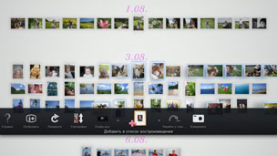

Создание Список воспроизведения избранных фотографий
Вы можете выбрать фотографии и добавить их в список воспроизведения. Список воспроизведения позволяет просматривать входящие в него снимки каждый раз в одной и той же последовательности.
Создание списка воспроизведения
1. |
Выберите на экране [Область библиотеки] фото, которое хотите добавить к списку воспроизведения, и нажмите кнопку  |
||||||||||||
|---|---|---|---|---|---|---|---|---|---|---|---|---|---|
2. |
Используйте левый джойстик для перехода к свободной ячейке на экране [Область списка воспроизведения] и нажмите кнопку |
||||||||||||
3. |
Установите параметры списка воспроизведения, перечисленные ниже.
|
 (Добавить в список воспроизведения).
(Добавить в список воспроизведения). .
.
 (Музыка) на экране XMB™.
(Музыка) на экране XMB™.Подсказки
- Параметры списка воспроизведения можно изменить в меню
 (Изменить).
(Изменить). - Параметры каждого списка воспроизведения можно настроить по-разному.
Добавление фотографий в список воспроизведения
1. |
Выберите фотографии, которые хотите добавить к списку воспроизведения, нажмите кнопку |
|---|---|
2. |
Выберите список воспроизведения и нажмите кнопку |
Изменение параметров Список воспроизведения
Параметры списка воспроизведения можно изменить. Выберите список воспроизведения, нажмите кнопку  и выберите меню (Изменить).
и выберите меню (Изменить).
Перемещение списка воспроизведения
Список воспроизведения можно переместить в другую папку. Для этого выберите список воспроизведения, нажмите кнопку и выберите  (Переместить). Для перемещения списка воспроизведения используйте левый джойстик.
(Переместить). Для перемещения списка воспроизведения используйте левый джойстик.
Подсказка
Выберите список воспроизведения и, нажав и удерживая кнопку  , переместите список воспроизведения с помощью левого джойстика.
, переместите список воспроизведения с помощью левого джойстика.
Удаление списка воспроизведения
Выберите список воспроизведения, который вы хотите удалить, нажмите кнопку и выберите  (Удалить).
(Удалить).